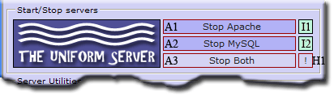

Quick Start Guide
The Uniform Server’s default configuration is set to allow only local access; users on your network or the Internet cannot access your server. This allows you to develop and view your website locally in a secure environment.
This guide shows you how to run the servers as standard programs. When run as standard programs, nothing is installed to the Windows registry. The servers are therefore fully portable.
Start the Servers
For reference, The Uniform Server's folder structure is shown on the right.
|

|

Note: There are various start-up conditions. If you receive a message unable to connect and are provided an option from your browser to try again, wait until all disk activity completes and click the "try again" button. Alternatively, wait a reasonable time to view the initial splash page, and enter the following into your browser: http://localhost/us_splash/index.php
If you do not have the VC9 library, when you attempt to start the servers, you will get a runtime error popup. See VC9 Libraries to resolve this.
Set New MySQL root password
|
Although you can skip setting a new MySQL root password, it is highly
|

|
Root folder www - Test
The root folder www contains a very simple web-site consisting of a single page named index.php.
Clicking menu button View www displays this page confirming that Apache is serving pages from this folder.
Add your Website or test pages
Copy your Website or test pages into the root folder www.
Before doing this you can delete the content of this root folder, with the exception of files .htaccess and favicon.ico.
- .htaccess - This file is part of the server security and should not be deleted.
- favicon.ico - This is a small image file displayed in a browser next to a Web page name. You can replace this with your own file. The name is important and should always be favicon.ico
View pages
The default server name is localhost. Use this to access pages as follows:
Index PagesTo access index pages (such as index.htm, index.html, index.php) type the following into your browser. http://localhost/ |
Specific pagesDisplay a specific page by appending its name to the server name. For example, if your test page is named test.php, then type the following into your browser: http://localhost/test.php |
The Apache server automatically searches for index pages and displays the first one it finds. If it cannot find an index page, a directory listing is displayed instead.
Stop the Servers
Note: Server control buttons toggle between start and stop.
|
 |
Where to go next
This quick guide shows how to start and stop the servers and display a test page. You can copy an entire web-site into the root folder www and it will then be served by Apache.
Quick Start - More Detail - An expanded quick guide providing more detail